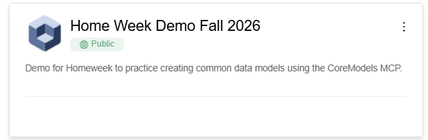
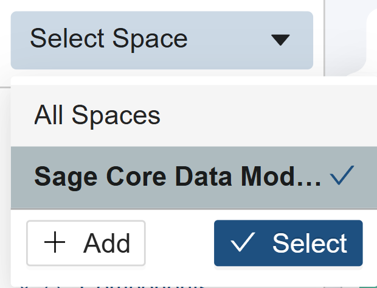

🔎 The Model Scout
I'm exploring assay types in order to build a common data model. Using CoreModels Write Access, look at the Home Week Demo Fall 2026 project, Sage Core Data Models space. Find all assay-related Types (templates), including versioned or near-duplicate ones. Group them into assay families (e.g. DNA/epigenomic sequencing, RNA-seq/transcriptomics, proteomics/mass spec, imaging, metabolomics, microbiome, arrays/genotyping, immunoassay, clinical/behavioral/PK, other). Show the count per family as a table and a chart.
Open go.coremodels.io and log in with your sagebase.org email to follow along in the user interface.
Then open the Home Week Demo Fall 2026 project:

In the project, open Select Space, choose Sage Core Data Models, and click Select:
